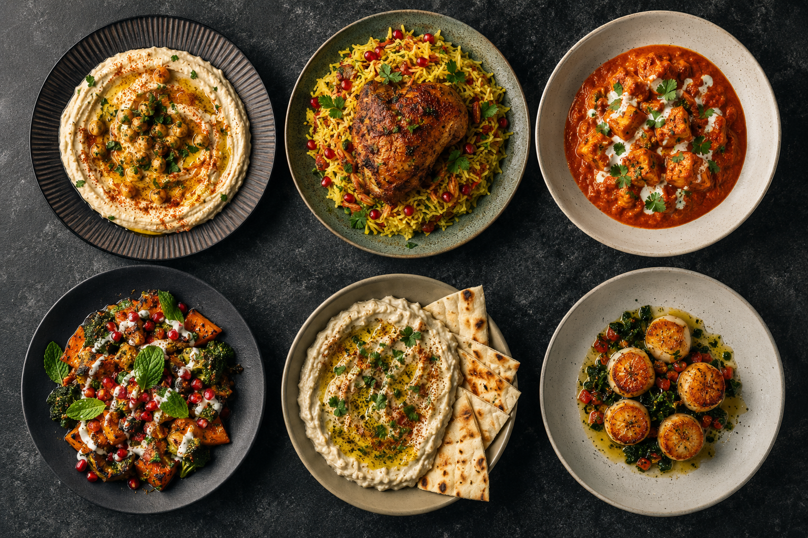

About us
A meal journal for people, not perfection.
Savory Taste Journal began with a simple observation: we rarely remember whether every plate matched, but we remember who listened, who laughed and what the room felt like.
Original by design
Every guide is written for this publication and every visual is made specifically for this corner. We favour inclusive, practical language and avoid unsupported wellness promises, artificial urgency and misleading claims.
Our editorial recipe
Each story balances atmosphere, a flexible menu, preparation order, conversation cues and a low-pressure way to finish the evening. Readers should always adapt suggestions for allergies, dietary requirements and local food-safety guidance.
Small details, lasting impressions.
A handwritten place note, a shared serving bowl or a familiar song can give a gathering its character. We collect those details and make them easy to use.
